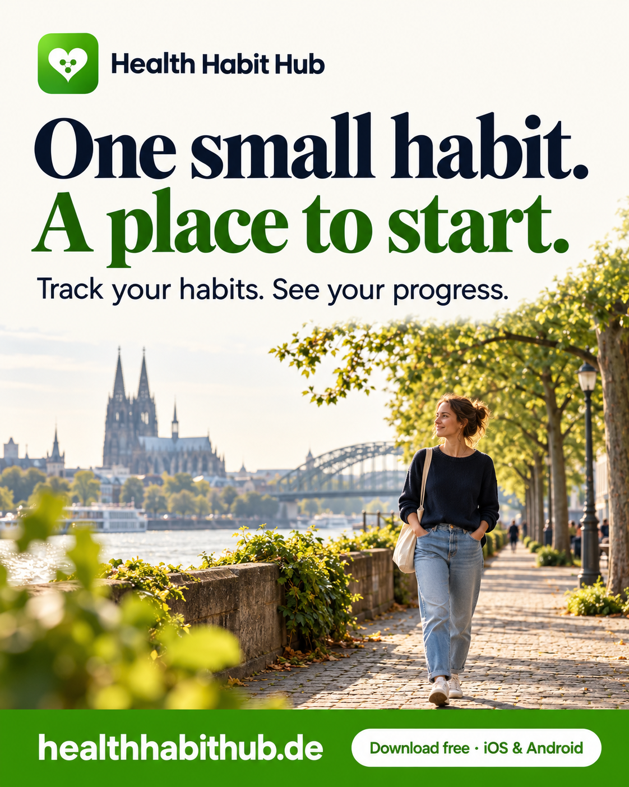
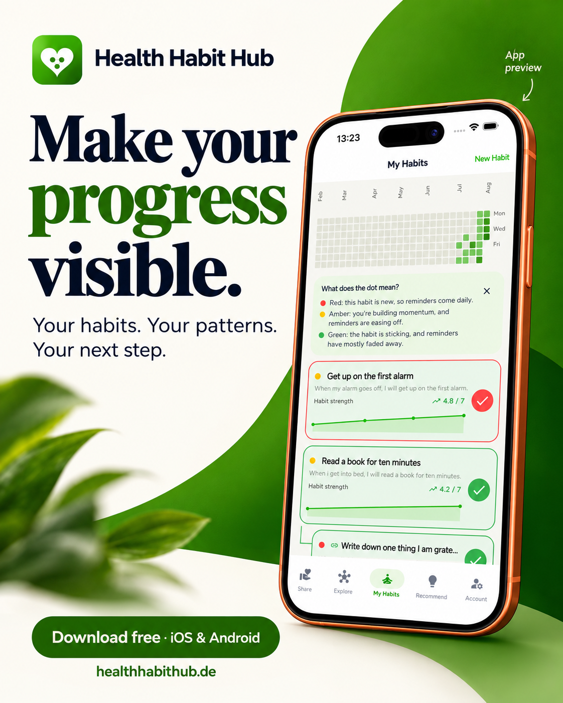
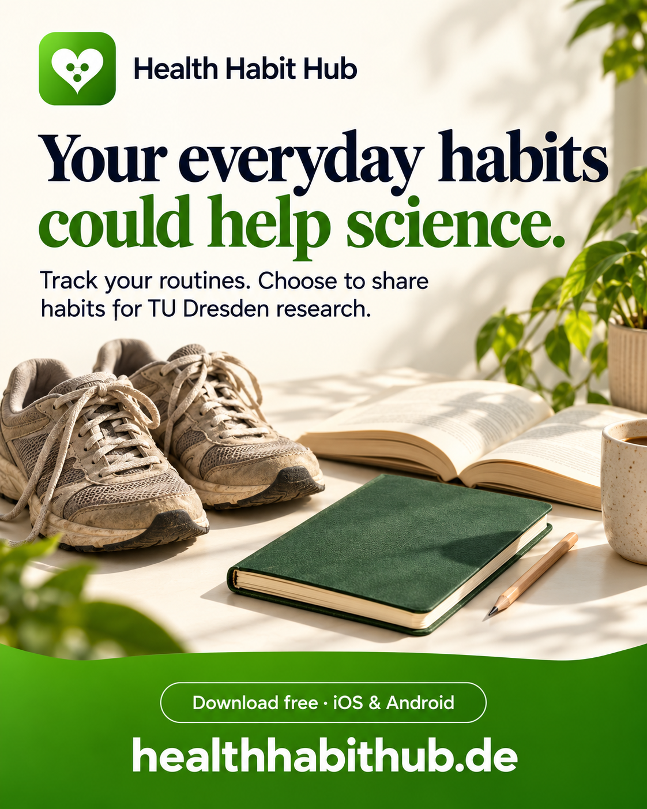

01 / An everyday invitation
One small habit. A place to start.
A warm introduction for people who want a simple place to begin.
Download image ↗1122 × 1402 PNG
Three campaign directions, matching English and German posts, and two video treatments. Pick a visual, copy the post and upload it to LinkedIn.
Open all post copy ↗ Asset guide ↗

A warm introduction for people who want a simple place to begin.

A clear explanation of the habit calendar, check-ins and suggestions.

A research invitation for a curious, science-minded LinkedIn audience.
The product film explains the experience with genuine app screens. The presenter version introduces it conversationally.
PromoStudio phone motion, genuine app screens and fresh ElevenLabs narration. Use with post 02. A silent version is also included.
Download video ↗Silent versionA fictional AI presenter, genuine app cutaways, visible captions and a clear download end card. Reuses the existing ElevenLabs presenter take in a corrected edit. Use with post 01.
Download video ↗